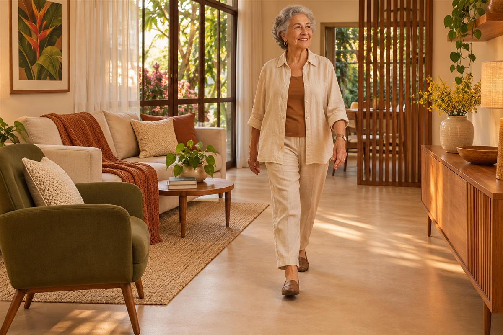

O que foi estudado
A revisão reuniu 22 estudos com 8.463 pessoas idosas que viviam na comunidade. Entre as intervenções estavam a avaliação de riscos no domicílio e a adaptação do ambiente. Os programas variavam e podiam incluir a retirada de obstáculos e mudanças na disposição dos móveis.

De onde vêm os 38%
No grupo selecionado por maior risco, nove estudos com 1.513 participantes estimaram uma taxa de quedas 38% menor com as intervenções de redução de riscos domésticos. Taxa contabiliza eventos ao longo do tempo, inclusive quando uma mesma pessoa cai mais de uma vez. O resultado descreve o efeito do conjunto de intervenções naquele grupo.
O que observar no ambiente
Percorra os caminhos mais usados com quem mora na casa. Veja onde a passagem estreita, onde falta luz e quais objetos precisam mudar de lugar. Registre o que dificulta cada trajeto para discutir as adaptações com um profissional quando necessário.